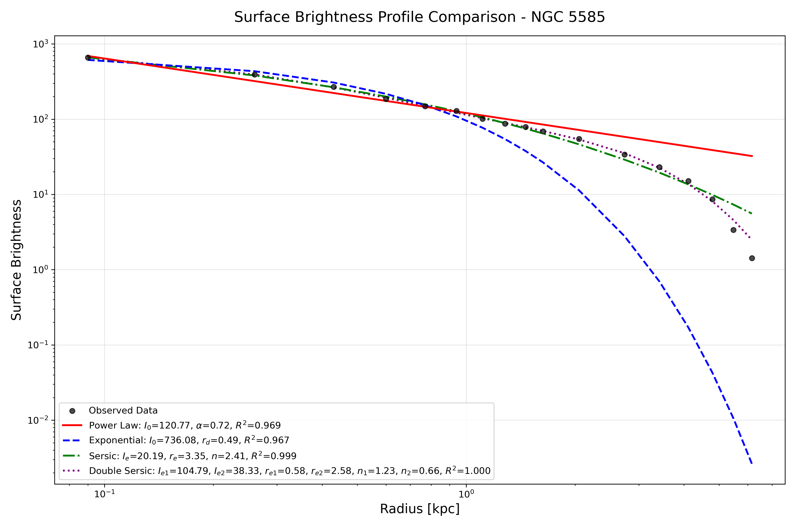

Galaxy Surface Brightness Modeling
Background
Surface brightness profiles of galaxies provide crucial insights into their stellar structure, morphology, and evolutionary processes. By modeling these profiles with analytical functions such as exponential and Sérsic laws, we can quantify bulge-disk decompositions, compare structural parameters, and investigate scaling relations between galaxies.
Methods
Using imaging data of nearby galaxies, surface brightness profiles were extracted through elliptical isophote fitting. Several models were applied:
- Power-law – baseline slope comparison.
- Exponential disk – characterization of disk-dominated galaxies.
- Sérsic – general profile fitting with variable index n.
- Double Sérsic – multi-component systems (bulge + disk).
Parameter optimization was performed with scipy.optimize.curve_fit, and goodness-of-fit
was evaluated using χ² statistics and residual analysis.
Results
- Sérsic models provided the best single-component fits across most galaxies.
- Double Sérsic decomposition revealed distinct bulge and disk components.
- Exponential disks were sufficient only for late-type spiral galaxies.
- Residuals highlighted structural asymmetries and deviations from idealized profiles.

Surface brightness profile

Profile fitting with Sérsic and exponential models
Python Libraries Used
numpy,pandas– data preprocessing and handlingmatplotlib– profile and residual visualizationastropy– astronomical data handlingscipy.optimize.curve_fit– parameter optimizationlmfit– advanced model fitting